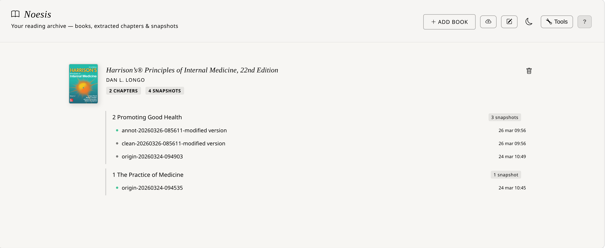
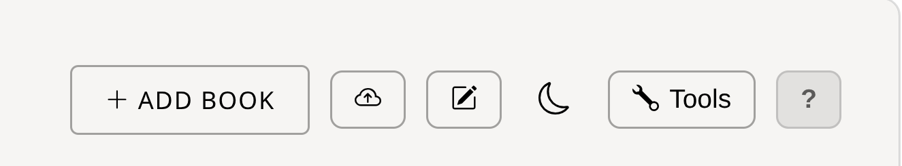
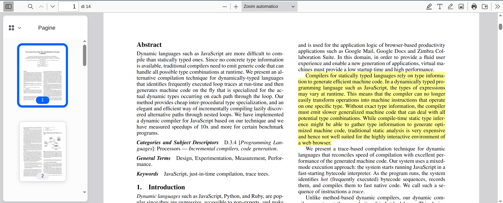
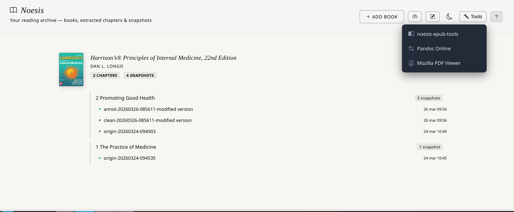

The Noesis entry point. Manage your EPUB collection, browse the books → chapters → snapshots hierarchy, and access Noesis Editor directly from the library.
Noesis Library organises your knowledge on three levels: each book shows extracted chapters, and each chapter exposes its snapshots saved over time — all accessible with one click.
Each imported EPUB appears with cover, title, author and number of extracted chapters. Click the cover to open the book in Noesis Reading.
Below each book appear the chapters you have extracted. Click on the chapter name to open the most recent snapshot directly in Noesis Editor.
Each chapter shows its snapshots with name, variant (annotated / clean / origin) and save date. Click on a specific snapshot to open that exact version in the editor.

The top-right toolbar collects all global library commands.

Opens the browser file picker. Select one or more .epub files from your device. The book is saved in noesisLibraryDB (IndexedDB) and appears immediately in the grid.
Imports snapshot files previously saved to the filesystem (HTML files with Noesis meta tags). The system reads the embedded chapterId and book name and automatically updates the hierarchy.
Opens Noesis Editor in standalone mode, without a pre-loaded chapter. Ideal for creating documents from scratch or from a collection imported via JSON.
Switches between Library light and dark theme. The preference is saved in localStorage and restored on next launch.
Dropdown with additional tools: Pandoc Online (document conversions in-browser via pandoc.wasm) and PDF.js Viewer (high-quality PDF rendering).
Opens a contextual help panel with the main instructions for using the Library. Also shown at first launch.
Each book card in the library offers contextual controls for managing the title and its related content.
Click anywhere on the book cover to open it in Noesis Reading. The reader automatically restores the last saved state (position, theme, font size).
The red ✕ button permanently removes the book from IndexedDB and all associated chapter metadata from noesisDB. The snapshot files on the filesystem are not deleted — they remain available for future reimport.
On Firefox, the Library is fully functional. The only difference is that the Tools dropdown may not show the Pandoc Online tool. All other features — import, reader, editor, snapshots — work identically.

The hierarchical structure below each book card gives instant access to all extracted work.
Each saved snapshot generates two variants: _annot (with highlight colours preserved) and _clean (clean version without colour formatting, ideal for reading or export). The _origin is the snapshot automatically saved at extraction time.
Click on the chapter name → opens the most recent snapshot. Click on a specific snapshot → opens that exact version in Noesis Editor. No intermediate dialogs.
Each snapshot row has a delete button. Removing a snapshot from the library only deletes the IndexedDB metadata record — the HTML file on the filesystem is not touched.
The Tools ▾ dropdown in the toolbar collects the built-in support tools.
Direct access to internal helper tools: ePub Slimmer (single file compression), Multi ePub Slimmer (batch up to 10 files) and ePub Splitter (creates standalone EPUB from selected chapters). Helper documentation →
Opens Pandoc Online in a new tab — universal document converter. Useful for transforming files exported from Noesis Editor into other formats (LaTeX, RST, ODT, etc.).
Opens Mozilla PDF.js in a new tab. View, search and print any PDF file with high-quality rendering, without leaving the Noesis ecosystem.

You don't need to extract a chapter to use Noesis Editor. The Open Editor button in the toolbar launches the editor in standalone mode — an empty document ready for any content.
Empty editor with the full toolbar. You can write, format, insert tables and images, and use Excalidraw exactly as in chapter mode.
Even in standalone mode, the collection Inspect Panel is available. You can inject chunks collected during previous reading sessions into the current document.